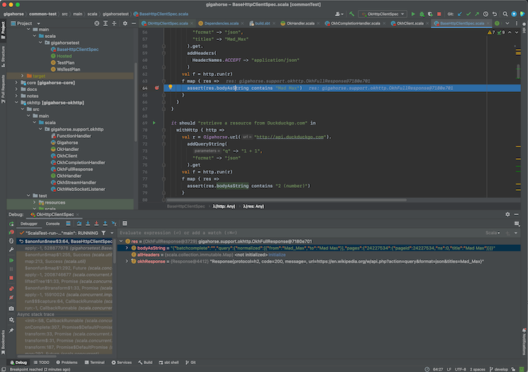
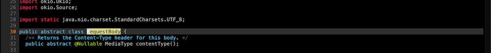
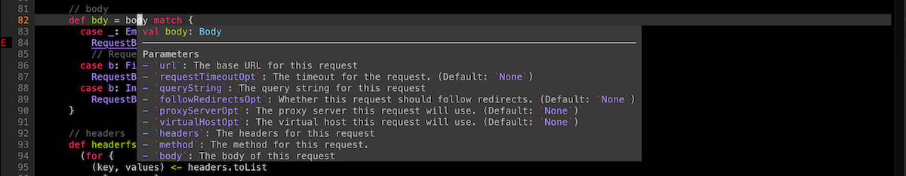

- IDE との統合
IDE との統合
エディタと sbt だけで Scala のコードを書くことも可能だが、今日日のプログラマの多くは統合開発環境 (IDE) を用いる。 Scala の IDE は Metals と IntelliJ IDEA の二強で、それぞれ sbt ビルドとの統合をサポートする。
- Metals のビルドサーバとして sbt を用いる
- IntelliJ IDEA へのインポート
- IntelliJ IDEA のビルドサーバとして sbt を用いる
- Metals フロントエンドとして Neovim を用いる
Metals のビルドサーバとして sbt を用いる
Metals は、Scala のためのオープンソースな言語サーバであり、VS Code その他の LSP をサポートするエディタのバックエンドとして機能することができる。 一方で Metals は、Build Server Protocol (BSP) 経由で sbt を含む異なるビルドサーバをサポートする。
VS Code で Metals を使うには:
- Extensions タブから Metals をインストールする:

build.sbtファイルを含むディレクトリを開く。- メニューバーより View > Command Palette… (macOS だと
Cmd-Shift-P) を開き Metals: Switch build server と打ち込み、「sbt」を選択する。

- インポート処理が完了したら、Scala のファイルを開いてみてコード補完が機能していることを確認する:

一部のサブプロジェクトを BSP へ入れたく無い場合は、以下のセッティングを使うことができる。
bspEnabled := false
コードに変更を加えて保存 (macOS だと Cmd-S) すると、Metals は sbt を呼び出して実際のビルド作業を行う。
Igal Tabachnik さんの Using BSP effectively in IntelliJ and Scala という記事が参考になる。
VS Code でのインタラクティブ・デバッグ
- コードにブレークポイントを設定することで、Metals はインタラクティブ・デバッグをサポートする:

- 単体テストを右クリックして「Debug Test」を選ぶことでインタラクティブ・デバッグを開始する。
テストがブレークポイントに当たると、変数の値を検査することができる。

インタラクティブ・デバッグが開始してからの操作方法の詳細は VS Code ドキュメンテーションの Debugging ページ参照。
sbt セッションへのログイン
Metals がビルドサーバとして sbt を使う間、シンクライアントを使って同じ sbt セッションにログインすることができる。
- Terminal セクションから
sbt --clientと打ち込む。

これで Metals が開始した sbt セッションにログインすることができた。その中でコードが既にコンパイルされた状態から testOnly その他のタスクを実行できる。
IntelliJ IDEA へのインポート
IntelliJ IDEA は JetBrains社が開発した IDE で、Community Edition は Apache v2 ライセンスの元でオープンソース化されている。 IntelliJ は sbt を含む多くのビルドツールと統合して、プロジェクトをインポートすることができる。 これは従来の方法で、BSP よりも多くの場合安定性が高い。
IntelliJ IDEA にビルドをインポートするには:
- Plugins タブから Scala プラグインをインストールする:

- Projects から
build.sbtファイルを含んだディレクトリを開く:

- インポート処理が完了したら、Scala のファイルを開いてみてコード補完が機能していることを確認する。
IntelliJ Scala プラグインは独自の軽量コンパイラエンジンを用いてエラーの検知を行うが、これは高速であるが正しくないこともある。Compiler-based highlighting といって、 IntelliJ を Scala コンパイラを使ってエラー・ハイライトを行うように設定することも可能だ。
IntelliJ IDEA でのインタラクティブ・デバッグ
- コードにブレークポイントを設定することで、IntelliJ はインタラクティブ・デバッグをサポートする:

- 単体テストを右クリックして「Debug <テスト名>」を選ぶことでインタラクティブ・デバッグを開始する。
もしくは、単体テストの左側にある緑色の「実行」アイコンをクリックする。
テストがブレークポイントに当たると、変数の値を検査することができる。

インタラクティブ・デバッグが開始してからの操作方法の詳細は IntelliJ ドキュメンテーションの Debug code ページ参照。
IntelliJ IDEA のビルドサーバとして sbt を用いる (上級者向け)
独自のコンパイラエンジンの他に IntelliJ は Build Server Protocol (BSP) 経由で sbt を含む異なるビルドサーバをサポートする。 IntelliJ の BSP サポートは従来のインポートと比較すると安定性が低く、バグや UX 問題などに引っかかるかもしれない。
IntelliJ において BSP を使う利点は、実際のビルド作業を sbt を用いて行うため、今までも sbt セッションを立ち上げながら IntelliJ を使っていた人は、二重でコンパイルしなくてもよくなるという利点がある。
IntelliJ のビルドサーバとして sbt を用いるには:
- Plugins タブから Scala プラグインをインストールする。
- BSP を使うには、Project タブの Open ボタンは使ってはいけない:

- メニューバーより New > “Project From Existing Sources” をクリックするか、Find Action (macOS だと
Cmd-Shift-P) より「Existing」 と打ち込んで「Import Project From Existing Sources」を探す:

build.sbtファイルを開く。ダイアログが表示されたら BSP を選択する:

- 「tool to import the BSP workspace」として sbt (recommended) を選択する:

- インポート処理が完了したら、Scala のファイルを開いてみてコード補完が機能していることを確認する:

一部のサブプロジェクトを BSP へ入れたく無い場合は、以下のセッティングを使うことができる。
bspEnabled := false
- Preferences より BSP と検索して、「build automatically on file save」を選択し、「export sbt projects to Bloop before import」を外す:

コードに変更を加えて保存 (macOS だと Cmd-S) すると、IntelliJ は sbt を呼び出して実際のビルド作業を行う。
sbt セッションへのログイン
シンクライアントを使って既存の sbt セッションにログインすることができる。
- Terminal セクションから
sbt --clientと打ち込む。

これで IntelliJ が開始した sbt セッションにログインすることができた。その中でコードが既にコンパイルされた状態から testOnly その他のタスクを実行できる。
Metals フロントエンドとして Neovim を用いる (上級者向け)
Neovim は、Vim エディタのモダンなフォークで、組み込みで LSP をサポートしていたりする。 そのため Neovim は Metals のフロントエンドとして設定可能だ。
Metals メンテナの一人である Chris Kipps さんが nvim-metals というプラグインを作っており、これは Metals 機能を網羅的にサポートする。
nvim-metals をインストールするには、Chris Kipps さんの lsp.lua を元に
$XDG_CONFIG_HOME/nvim/lua/ 以下に設定ファイルを書き、自分の好みに合わせていく。
例えば、vim-plug など別のプラグインマネージャを使っている場合はプラグインの部分をコメントアウトする必要がある。
init.vim から以下のようにして読み込める:
lua << END
require('lsp')
END
lsp.lua によると、g:metals_status はステータスラインに表示させるべきと書いてあり、これは lualine.nvim などを使って実現できる。
- 次に、sbt を使ったビルドの Scala ファイルを Neovim を用いて開く。
- プロンプトが表示されたら
:MetalsInstallを実行する。 :MetalsStartServerを実行する。- ステータスラインの設定がうまくいっていれば、「Connecting to sbt」、「Indexing」などと表示される。

- Insert モードに入るとコード補完が作動し、タブを使って候補を見ていくことができる:

- 変更を保存するとビルドが自動で行われ、コンパイルエラーがあった場合はコード中の余白に表示される:

定義へのジャンプ
- カーソル下のシンボルの定義へは
gDを使ってジャンプできる (具体的なキーバインドは好みのものにカスタマイズできる):
 Ctrl-Oを使って古いバッファーに戻る。
ホバリング
- 「マウスオーバー」のようにカーソル下のシンボルの型情報を表示させるには、Normal モードで
Kを使う:

エラーの列挙
- 全てのコンパイラエラーと警告を列挙するには
<leader>aaを使う:

- これは標準の quickfix リストを使っているので、
:cnextや:cprevといったコマンドを使ってエラーや警告を見ていける。 - エラーだけ見たい場合は、
<leader>aeを使う。
Neovim でのインタラクティブ・デバッグ
- nvim-dap のおかげで、Neovim はインタラクティブ・デバッグをサポートする。
<leader>dtを用いてブレークポイントを設定していく:

- 単体テストを開き、ビルド済みかをホバリング (
K) で確認して、debug continue (<leader>dc) でデバッガを開始する。 プロンプトが表示されたら、「1: RunOrTest」を選ぶ。 - テストがブレークポイントに当たると、debug hovering (
<leader>dK) を使って変数の値を検査することができる:

- 再度 debug continue (
<leader>dc) してセッションを終了させる。
詳細は nvim-metals 参考。
sbt セッションへのログイン
シンクライアントを使って既存の sbt セッションにログインすることができる。
- 新しい vim ウィンドウに
:terminalと打ち込んで組み込みのターミナルを立ち上げる。 sbt --clientと打ち込む

Neovim の中だが、タブ補完なども普通に動作する。